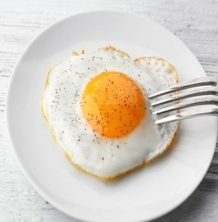

Cara Memasak Telur Ceplok
Dengan Mudah Tanpa Ribet

Bahan-bahan
- Telur
- Garam
- Milk
- Micin
- Minyak
Langkah-langkah
- Panaskan Panci
- Tuang minyak ke panci yang sudah panas
- Masukan Telur
- Goreng Telur
- Masukan Garam dan Micin
- Telur Ceplok siap di Makan
Created By Rosid Mustofa 2023